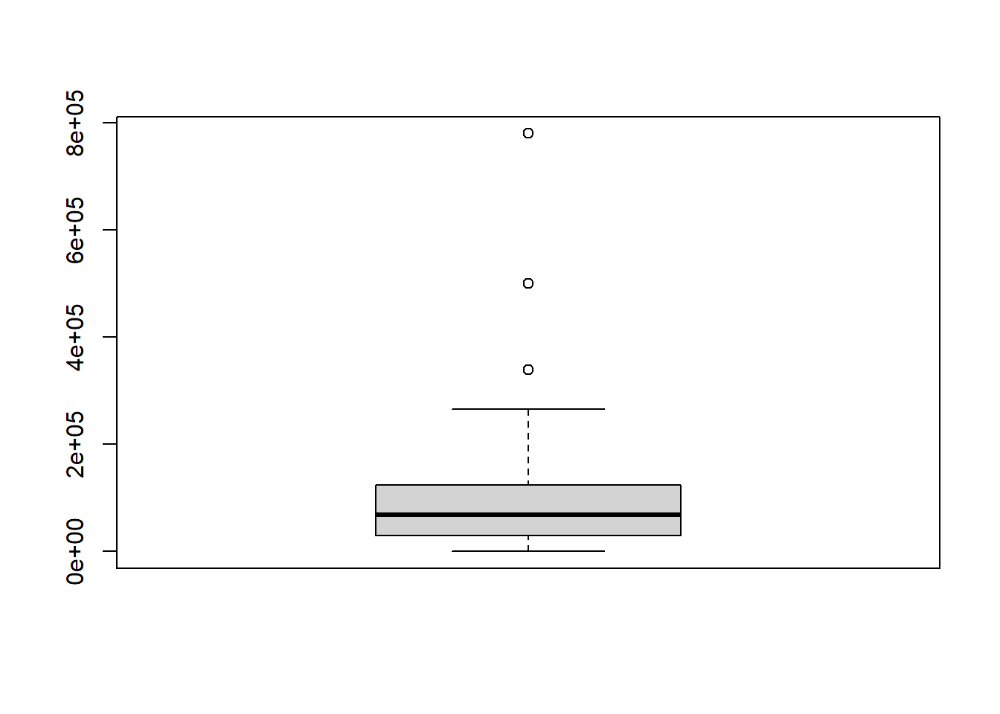
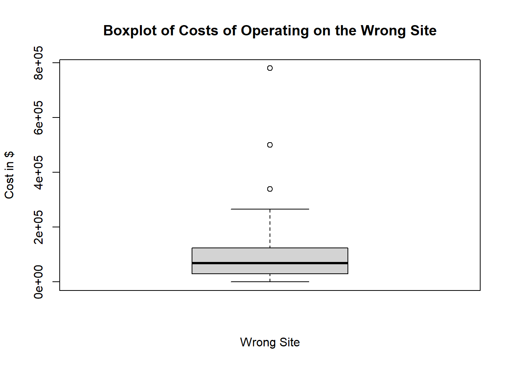

data <- c(38.1,38.3,38.4,39.5,39.7,39.1,39.5,38.9,39.2,39.9,39.7,39.0)
sd(data)[1] 0.5930788By the end of this lesson, you should be able to:
In the previous lesson, we introduced two important characteristics of a distribution: the shape and the center. In this section, you will discover ways to summarize the spread of a distribution of data. The spread of a distribution of data describes how far the observations tend to be from each other. There are many ways to describe the spread of a distribution, but one of the most popular measurements of spread is called the “standard deviation.”
This activity introduces two measures of spread: the standard deviation and the variance.

Bird Flu Fever

Avian Influenza A H5N1, commonly called the bird flu, is a deadly illness that is currently only passed to humans from infected birds. This illness is particularly dangerous because at some point it is likely to mutate to allow human-to-human transmission. Health officials worldwide are preparing for the possibility of a bird flu pandemic.

Dr. K. Y. Yuen led a team of researchers who reported the body temperatures of people admitted to Chinese hospitals with confirmed cases of Avian Influenza. Their research team collected data on the body temperature at the time that people with the bird flu were admitted to the hospital. In the article, they reported on two groups of people, those with relatively uncomplicated cases of the bird flu and those with severe cases.

The table below presents the data representative of the body temperatures for the two groups of bird flu patients:
| Body Temperature | Case Type |
|---|---|
| 38.1 | Simple |
| 38.3 | Simple |
| 38.4 | Simple |
| 39.5 | Simple |
| 39.7 | Simple |
| 39.1 | Severe |
| 39.5 | Severe |
| 38.9 | Severe |
| 39.2 | Severe |
| 39.9 | Severe |
| 39.7 | Severe |
| 39.0 | Severe |

Let us focus on the relatively uncomplicated cases. Creating a histogram of such a small dataset does not provide much benefit. With only a handful of values, there is not much shape to the distribution.
We can, however, use numerical summaries to give an indication of the center of the distribution.
We will use these data to investigate some measures of the spread in a data set.
There is relatively little difference in the temperatures of the uncomplicated patients. The lowest is \(38.1 ^\circ \text{C}\), while the highest temperature is \(39.7 ^\circ \text{C}\).
The standard deviation is a measure of the spread in the distribution. If the data tend to be close together, then the standard deviation is relatively small. If the data tend to be more spread out, then the standard deviation is relatively large.
The standard deviation of the body temperatures is \(0.742 ^\circ \text{C}\). This number contains information from all the patients. If the patients’ temperatures had been more diverse, the standard deviation would be larger. If the patients’ temperatures were more uniform (i.e. closer together), then the standard deviation would have been smaller. If all the patients somehow had the same temperature, then the standard deviation would be zero.
We are working with a sample. To be explicit, we call \(0.742 ^\circ \text{C}\) the sample standard deviation. The symbol for the sample standard deviation is \(s\). This is a statistic. The parameter representing the population standard deviation is \(\sigma\) (pronounced /SIG-ma/). In practice, we rarely know the value of the population standard deviation, so we use the sample standard deviation \(s\) as an approximation for the unknown population standard deviation \(\sigma\).
At this point, you probably do not have much intuition regarding the standard deviation. We will use this statistic frequently. By the end of the semester you can expect to become very comfortable with this idea. For now, all you need to know is that if two variables are measured on the same scale, the variable with values that are further apart will have the larger standard deviation.
To calculate the sample standard deviation in R, follow these steps:
data <- c(38.1,38.3,38.4,39.5,39.7,39.1,39.5,38.9,39.2,39.9,39.7,39.0)
sd(data)[1] 0.5930788
How is the standard deviation computed? Where does this “magic” number come from? How does one number include the information about the spread of all the points?
It is a little tedious to compute the standard deviation by hand. You will usually compute standard deviation with a computer. However, the process is very instructive and will help you understand conceptually what the statistic represents. As you work through the following steps, please remember the goal is to find a measure of the spread in a data set. We want one number that describes how spread out the data are.
First, observe the number line below, where each x represents the temperature of a patient with a relatively uncomplicated case of bird flu. As mentioned earlier, there is not a huge spread in the temperatures.

On your sketch of the number line, we draw a vertical line at 38.8 degrees, the sample mean. Now, draw horizontal lines from the mean to each of your \(\times\)’s. These horizontal line segments represent the spread of the data about the mean. Your plot should look something like this:

The length of each of the line segments represents how far each observation is from the mean. If the data are close together, these lines will be fairly short. If the distribution has a large spread, the line segments will be longer. The standard deviation is a measure of how long these lines are, as a whole.
The distance between the mean and an observation is referred to as a deviation. In other words, deviations are the lengths of the line segments drawn in the image above.
\[ \begin{array}{1cl} \text{Deviation} & = & \text{Value} - \text{Mean} \\ \text{Deviation} & = & x - \bar x \end{array} \]
If the observed value is greater than the mean, the deviation is positive. If the value is less than the mean, the deviation is negative.
The standard deviation is a complicated sort of average of the deviations. Making a table like the one below will help you keep track of your calculations. Please participate fully in this exercise. Writing your answers at each step and developing a table as instructed will greatly enhance the learning experience. By following these steps, you will be able to compute the standard deviation by hand, and more importantly, understand what it is telling you.
Step 01: The first step in computing the standard deviation by hand is to create a table, like the following. Enter the observed data in the first column.
|
Observation (\(x\)) |
Deviation from the Mean (\(x-\bar x\)) |
|---|---|
|
\(38.1\) |
\(38.1-38.8=-0.7\) |
|
\(38.3\) |
|
|
\(38.4\) |
|
|
\(39.5\) |
|
|
\(39.7\) |
|
|
\(\bar x = 38.8\) |
Step 02: The second column of the table contains the deviations from the mean. Complete column 2 of the table above.
Check Results for Step 29b. Compute the mean of Column 2. What do you get?
This is an excellent suggestion. This is probably one of the first things statisticians used to estimate the spread in the data.
If we take the absolute value of the deviations, then all the values are positive. By taking the mean of these numbers, we do get a measure of spread. This quantity is called the mean absolute deviation (MAD).
There is good news and bad news. The good news is, you discovered a way to estimate the spread in a data set. (In fact, the MAD is used as one estimate of the volatility of stocks.) The bad news is that the MAD does not have good theoretical properties. A proof of this claim requires calculus, and so will not be discussed here. For most applications, there is a better choice. Please select another option.

Step 03: Add a third column to your table. To get the values in this column, square the deviations from the mean that you found in Column 2.
|
Observation \(x\) |
Deviation |
Squared Deviation |
|---|---|---|
|
\(38.1\) |
\(38.1-38.8=-0.7\) |
|
|
\(38.3\) |
\(38.3-38.8=-0.5\) |
|
|
\(38.4\) |
\(38.4-38.8=-0.4\) |
|
|
\(39.5\) |
\(39.5-38.8=0.7\) |
|
|
\(39.7\) |
\(39.7-38.8=0.9\) |
|
|
\(\bar x = 38.8\) |
Sum \(=0\) |
|
Observation \(x\) |
Deviation |
Squared Deviation |
|---|---|---|
|
\(38.1\) |
\(38.1-38.8=-0.7\) |
\((-0.7)^2=0.49\) |
|
\(38.3\) |
\(38.3-38.8=-0.5\) |
\((-0.5)^2=0.25\) |
|
\(38.4\) |
\(38.4-38.8=-0.4\) |
\((-0.4)^2=0.16\) |
|
\(9.5\) |
\(39.5-38.8=0.7\) |
\((0.7)^2=0.49\) |
|
\(39.7\) |
\(39.7-38.8=0.9\) |
\((0.9)^2=0.81\) |
|
\(\bar x = 38.8\) |
Sum \(=0\) |
Step 04: Now, add up the squared deviations from the mean.
|
Observation \(x\) |
Deviation |
Squared Deviation |
|---|---|---|
|
\(38.1\) |
\(38.1-38.8=-0.7\) |
\((-0.7)^2=0.49\) |
|
\(38.3\) |
\(38.3-38.8=-0.5\) |
\((-0.5)^2=0.25\) |
|
\(38.4\) |
\(38.4-38.8=-0.4\) |
\((-0.4)^2=0.16\) |
|
\(39.5\) |
\(39.5-38.8=0.7\) |
\((0.7)^2=0.49\) |
|
\(39.7\) |
\(39.7-38.8=0.9\) |
\((0.9)^2=0.81\) |
|
\(\bar x = 38.8\) |
Sum \(=0\) |
Sum \(=2.20\) |
The sum of the squared deviations is 2.20.
Step 05: Recall that an average is adding a bunch of things up and dividing by the number of things. Consider taking the average of the squared deviations by adding them up and dividing by the number of deviations.
Unfortunately, this is what is technically known as a “biased” estimate. We don’t get into what that means in this class, but to correct for the bias, we divide by \(n-1\) instead.
The number you computed in Step 05 is called the sample variance. It is a measure of the spread in a data set. It has very nice theoretical properties. The variance plays an important role in Statistics. We denote the sample variance by the symbol \(s^2\).
It can be shown that the sample variance is an unbiased estimator of the true population variance (which is denoted \(\sigma^2\).) This means that the sample variance can be considered a reasonable estimator of the population variance. If the sample size is large, this estimator tends to be very good.
The sum of the squared deviations is the sum of the values in Column 3. This sum equals 2.20. We divide the sum of Column 3 (\(2.20\)) by \(n-1=5-1=4\) to get the sample variance, \(s^2\):
\[s^2=\frac{sum}{n-1}=\frac{2.20}{5-1}=0.55\]
This is the sample variance.
|
Observation \(x\) |
Deviation |
Squared Deviation |
|---|---|---|
|
\(38.1\) |
\(38.1-38.8=-0.7\) |
\((-0.7)^2=0.49\) |
|
\(38.3\) |
\(38.3-38.8=-0.5\) |
\((-0.5)^2=0.25\) |
|
\(38.4\) |
\(38.4-38.8=-0.4\) |
\((-0.4)^2=0.16\) |
|
\(39.5\) |
\(39.5-38.8=0.7\) |
\((0.7)^2=0.49\) |
|
\(39.7\) |
\(39.7-38.8=0.9\) |
\((0.9)^2=0.81\) |
|
\(\bar x = 38.8\) |
Sum \(=0\) |
Sum \(=2.20\) |
|
Variance: |
\(\displaystyle{s^2=\frac{sum}{n-1}=\frac{2.20}{5-1}=0.55}\) |
Step 06: Take the square root of the sample variance to get the sample standard deviation.
The sample standard deviation is defined as the square root of the sample variance.
\[\text{Sample Standard Deviation} = s = \sqrt{ s^2 } = \sqrt{\strut\text{Sample Variance}}\]
The standard deviation has the same units as the original observations. We use the standard deviation heavily in statistics.
The sample standard deviation (\(s\)) is an estimate of the true population standard deviation (\(\sigma\)).
|
Observation \(x\) |
Deviation |
Squared Deviation |
|---|---|---|
|
\(38.1\) |
\(38.1-38.8=-0.7\) |
\((-0.7)^2=0.49\) |
|
\(38.3\) |
\(38.3-38.8=-0.5\) |
\((-0.5)^2=0.25\) |
|
\(38.4\) |
\(38.4-38.8=-0.4\) |
\((-0.4)^2=0.16\) |
|
\(39.5\) |
\(39.5-38.8=0.7\) |
\((0.7)^2=0.49\) |
|
\(39.7\) |
\(39.7-38.8=0.9\) |
\((0.9)^2=0.81\) |
|
\(\bar x = 38.8\) |
Sum \(=0\) |
Sum \(=2.20\) |
|
Variance: |
\(\displaystyle{s^2=\frac{sum}{n-1}=\frac{2.20}{5-1}=0.55}\) |
|
|
Standard Deviation: |
\(\displaystyle{s = \sqrt{s^2}=\sqrt{0.55} \approx 0.742}\) |
The sample standard deviation is \(s = 0.742\) degrees Centigrade.
Take a few minutes to verify that you can recreate this table on your own.
Standard Deviation
The standard deviation is one number that describes the spread in a set of data. If the data points are close together the standard deviation will be smaller than if they are spread out.
At this point, it may be difficult to understand the meaning and usefulness of the standard deviation. For now, it is enough for you to recognize the following points:
Variance
The variance is the square of the standard deviation. The sample variance is denoted by the symbol \(s^2\). You found the sample standard deviation for patient temperatures of uncomplicated cases of bird in the bird above is \(s = 0.74162\). So, the sample variance for this data set is \(s^2 = 0.74162^2 = 0.550\). Be aware, if you had squared the rounded value of \(s^2 = 0.742\) in the calculation, you would have gotten an answer of 0.551 instead. This would be considered incorrect!
To calculate the sample variance in R:
data <- c(38.1,38.3,38.4,39.5,39.7,39.1,39.5,38.9,39.2,39.9,39.7,39.0)
var(data)[1] 0.3517424The standard deviation and variance are two commonly used measures of the spread in a data set. Why is there more than one measure of the spread? The standard deviation and the variance each have their own pros and cons.
The variance has excellent theoretical properties. It is an unbiased estimator of the true population variance. That means that if many, many samples of \(n\) observations were drawn, the variances computed for all the samples would be centered nicely around the true population variance, \(\sigma^2\). Because of these benefits, the variance is regularly used in higher-level statistics applications. One drawback of the variance is that the units for the variance are the square of the units for the original data. In the bird flu example, the body temperatures were measured in degrees Centigrade. So, the variance will have units of degrees Centigrade squared \((^\circ \text{C})^2\). What does degrees Centigrade squared mean? How do you interpret this? It doesn’t make any sense. This is one of the major drawbacks of the sample variance.
Because we take the square root of the variance to get the standard deviation, the standard deviation is in the same units as the original data. This is a great advantage, and is one of the reasons that the standard deviation is commonly used to describe the spread of data.
Enter the patient temperature data for the severe cases of bird flu into R Then use R to calculate the numerical summaries you have learned so far. As a reminder, the temperatures of patients with a severe case of bird flu are:
bird_flu <- c(39.1, 39.5, 38.9, 39.2, 39.9, 39.7, 39)
mean(bird_flu)[1] 39.32857median(bird_flu)[1] 39.2sd(bird_flu)[1] 0.377334var(bird_flu)[1] 0.142381For the next two questions, consider the histograms below comparing weight (in kilograms) of men (top histogram) to elephant seals (bottom histogram).
Weight of Men Compared to Weight of Seals

Review of Parameters and Statistics
We have now learned some statistics that can be used to estimate population parameters. For example, we use \(\bar x\) to estimate the population mean \(\mu\). The sample statistics \(s\) estimates the true population standard deviation \(\sigma\). The following table summarizes what we have done so far:
|
Sample Statistic |
Population Parameter |
|
|---|---|---|
|
Mean |
\(\bar x\) |
\(\mu\) |
|
Standard Deviation |
\(s\) |
\(\sigma\) |
|
Variance |
\(s^2\) |
\(\sigma^2\) |
|
\(\vdots\) |
\(\vdots\) |
\(\vdots\) |
Unless otherwise specified, we will always use Rto find the sample variance and sample mean. In each case, the sample statistic estimates the population parameter. The ellipses \(\vdots\) in this table hint that we will add rows in the future.
Optional Reading: Formulas for \(s\) and \(s^2\) (Hidden)
Formulas
For those who like formulas, the equation for the sample variance and sample standard deviation are given here.
Sample variance:
\[\displaystyle{ s^2=\frac{\sum\limits_{i=1}^n (x_i-\bar x)^2}{n-1} }\]
Sample standard deviation:
\[\displaystyle{ s=\sqrt{s^2}=\sqrt{\frac{\sum\limits_{i=1}^n (x_i-\bar x)^2}{n-1}} }\]
where \(x_i\) is the \(i^{th}\) observed data value, and \(i=1, 2, \ldots, n\).
Unless otherwise specified, we will always use Excel to find the sample variance and sample mean.
Why do we divide by \(n-1\)?
When computing the standard deviation or the variance, we are finding a value that describes the spread of data values. It is a measure of how far the data are from the mean. Since we do not know the true mean (\(\mu\),) we use the sample mean (\(\bar x\),) to estimate it. Typically, the data will be closer to \(\bar x\) than to \(\mu\), since \(\bar x\) was computed using the data. To compensate for this, we divide by \(n-1\) rather than \(n\) when we find the “average” of the squared deviations from the mean. It turns out, that subtracting 1 from \(n\) inflates this average by the precise amount needed to compensate for the use of \(\bar x\) as an estimate for \(\mu\). As a result, the sample variance (\(s^2\)) is a good estimator of the population variance (\(\sigma^2\).)Neither the standard deviation nor the variance is resistant to outliers. This means that when there are outliers in the data set, the standard deviation and the variance become artificially large. It is worth noting that the mean is also not resistant. When there are outliers, the mean will be “pulled” in the direction of the outliers.
The mean and standard deviation are used to describe the center and spread when the distribution of the data is symmetric and bell-shaped. If data are not symmetric and bell-shaped, we typically use the five-number summary (discussed below) to describe the spread, because this summary is resistant.
Recall the five steps of the Statistical Process (and the mnemonic “Daniel Can Discern More Truth).
|
Step 1: |
Daniel |
Design the study |
|
Step 2: |
Can |
Collect data |
|
Step 3: |
Discern |
Describe the data |
|
Step 4: |
More |
Make inferences |
|
Step 5: |
Truth |
Take action |
Step 3 of this process is “Describe the data.” You have already learned about the mean, median, mode, standard deviation, variance and histograms. These can be good ways to describe the data. The following information on percentiles, quartiles, 5-number summaries, and boxplots will help you learn other common ways to describe data, especially if the data are skewed or contain outliers.
For symmetric, bell-shaped data, the mean and standard deviation provide a good description of the center and shape of the distribution. The mean and standard deviation are not sufficient to describe a distribution that is skewed or has outliers. An outlier is any observation that is very far from the others. The mean is pulled in the direction of the outlier. Also, the standard deviation is inflated by points that are very far from the mean.
Now, you have probably had some experience with percentiles in the past especially when you received a score on a standardized test such as the ACT. Even though percentiles are commonly used, they are generally misunderstood. Before examining the wrong site/wrong patient data, let’s review percentiles. Even if you think you understand percentiles, please study this section carefully.
Imagine a very long street with houses on one side. The houses increase in value from left to right. At the left end of the street is a small cardboard box with a leaky roof. Next door is a slightly larger cardboard box that does not leak. The houses eventually get larger and more valuable. The rightmost house on the street is a huge mansion.
The home values are representative of data. If we have a list of data, sorted in increasing order, and we want to divide it into 100 equal groups, we only need 99 dividers (like fences) to divide up the data. The first divider is as large or larger than 1% of the data. The second divider is as large or larger than 2% of the data, and so on. The last divider, the 99th, is the value that is as large or larger than 99% of the data. These dividers are called percentiles. A percentile is a number such that a specified percentage of the data are at or below this number. For example, the 99th percentile is a number such that 99% of the data are at or below this value. As another example, half (50%) of the data lie at or below the 50th percentile. The word percent means \(\div 100\). This can help you remember that the percentiles divide the data into 100 equal groups.
Quartiles are special percentiles. The word quartile is from the Latin quartus, which means “fourth.” The quartiles divide the data into four equal groups. The quartiles correspond to specific percentiles. The first quartile, Q1, is the 25th percentile. The second quartile, Q2, is the same as the 50th percentile or the median. The third quartile, Q3, is equivalent to the 75th percentile.
Wrong Site/Wrong Patient Lawsuits
Percentiles can be used to describe the center and spread of any distribution and are particularly useful when the distribution is skewed or has outliers. To explore this issue, you will use software to calculate percentiles of data on costs incurred by hospitals due to certain lawsuits. The lawsuits in question were about surgeries performed on the wrong patient, or on the right patient but the wrong part of the patient’s body (the wrong site).
But first, we need to learn how to load data into R.
R has many built-in toolboxes. R also has a vast array of toolboxes beyond the built-in ones that we must first install. This is like going to the Home Depot to buy a specialized toolbox and then storing it in your garage. We only have to “buy” it once.
To install a library, we use the install.packages("") command, where we specify the library we want in the quotes inside the parentheses.
rio is a toolbox that is very useful for loading data into R. If you haven’t already done so, install the rio library.
install.packages('rio')While you only have to install libraries once, you have to load them every time you want to use one. It’s like going to the garage to get the toolbox you need for the job.
Now let’s load the data and calculate some percentiles!
rio library:library(rio)import() function to load the dataset:wrong_site <- import("https://github.com/byuistats/Math221D_Course/raw/main/Data/WrongSiteWrongPatient.xlsx")To calculate percentiles and quartiles in R, do the following
$. For example, if we wanted only to look at the Wrong_Patient clumn in the wrong_site dataset: [1] 250000 106900 62307 192800 20769 2680 4300 30819 23214
[10] 26099 0 50000 66600 175000 10384 42900 52928 0
[19] 8200 2500 6900 126300 900 7700 140000 76000 50000
[28] 354530 5359 4300 12000 16749 35600 9045 21900 2010
[37] 22444 50000 85000 40370 39863 0 36100 49000 48908
[46] 19800 32200 3400 0 75000 21774 2600 30000 7300
[55] 176940 55000 9500 55272 4690 75000 34168 83700 1005
[64] 17419 34800 14739 0 0 1000 325 41538 108200
[73] 63224 15000 0 3900 65657 50000 109205 3900 10000
[82] 9900 87096 12090 0 1000 0 74701 3900 18000
[91] 0 33499 1250 0 29813 11724 141363 3685 35508
[100] 2500 12060 5695 50582 82071 55400 0 104400 500
[109] 0 25000 10000 85000 25000 0 24100 3900 1250000
[118] 15074 550 7195 101800 11600 1000 4020 19764 25794
[127] 900 10000 35200 94100 0 16909 128400 60967 50000
[136] 50000 84751 46800 130308 43800 49242 22800 15500 11054
[145] 400 10000 104790 13064 6400 100000 17084 16300 11000
[154] 12500 0 1200 0 200000 3900 3015 172200 25000
[163] 27468 250000 21104 12500 30000 59000 46227 500 131000
[172] 2345 6000 0 670 9714 NA NA NA NA
[181] NA NA NA NA NA NA NA NA NA
[190] NA NA NA NA NA NA NA NA NA
[199] NA NA NA NA NA NA NA NA NA
[208] NA NA NA NA NA NA NA NA NA
[217] NA NA NA NA NA NA NA NA NA
[226] NA NA NA NA NA NA NA NA NA
[235] NA NA NA NA NA NA NA NA NA
[244] NA NA NA NA NA NA NA NA NA
[253] NA NA NA NA NA NA NA NA NA
[262] NA NA NA NA NA NA NA NA NA
[271] NA NA NA NA NA NA NA NA NA
[280] NA NA NA NA NA NA NA NA NA
[289] NA NA NA NA NA NA NA NA NA
[298] NA NA NA NA NA NA NA NA NA
[307] NA NA NA NA NA NA NA NA NA
[316] NA NA NA NA NA NA NA NA NA
[325] NA NA NA NA NA NA NA NA NA
[334] NA NA NA NA NA NA NA NA NA
[343] NA NA NA NA NA NA NA NA NA
[352] NA NA NA NA NA NA NA NA NA
[361] NA NA NA NA NA NA NA NA NA
[370] NA NA NA NA NA NA NA NA NA
[379] NA NA NA NA NA NA NA NA NA
[388] NA NA NA NA NA NA NA NA NA
[397] NA NA NA NA NA NA NA NA NA
[406] NA NA NA NA NA NAUse R’s quantile() function. This functions requires two inputs separated by a comma: the data and the desired percentile input as a decimal.
To calculate the 25th percentile for the costs of surgery done on the Wrong Site:
quantile(wrong_site$Wrong_Site, .25, na.rm=TRUE) 25%
29496 # Note: the na.rm=TRUE removes the missing values from the datasetThe first quartile (\(Q_1\)) or 25th percentile (calculated in R) of the wrong-site data is: $29,496. (This result is illustrated in the figure below.) This means that 25 percent of the time hospitals lost a wrong-site lawsuit, they had to pay $29,496 or less. The 25th percentile can be written symbolically as: P25 = $29,496. Other percentiles can be written the same way. The 99th percentile can be written as P99.
| 1st percentile | 0 |
| 2nd percentile | 0 |
| 3rd percentile | 0 |
| … | … |
| 24th percentile | 28633.4 |
| 25th percentile | 29496 |
| 26th percentile | 31067 |
quantile(wrong_site$Wrong_Site, .13, na.rm=TRUE) 13%
6343.4 quantile(wrong_site$Wrong_Site, .9, na.rm=TRUE) 90%
149963 quantile(wrong_site$Wrong_Site, .75, na.rm=TRUE) 75%
124280 quantile(wrong_site$Wrong_Site, .5, na.rm=TRUE) 50%
68552 #Or
median(wrong_site$Wrong_Site)[1] 68552
Another way to summarize data is with the five-number summary. The five-number summary is comprised of the minimum, the first quartile, the second quartile (or median), the third quartile, and the maximum.
There is a very easy way to get the Five-Number Summary along with the mean and standard deviation. The favstats() function in the mosaic library gives us all of our favorite statistics.
As before, we will have to install the mosaic library once, then load it when we want to use it.
To find the values for a five-number summary in R, do the following
mosaic library (Only Once):install.packages("mosaic")library(mosaic)favstats() function:favstats(wrong_site$Wrong_Site) min Q1 median Q3 max mean sd n missing
0 29496 68552 124280 780575 80041.24 71403.83 411 0
A boxplot is a graphical representation of the five-number summary. Unlike the mean or standard deviation, a boxplot is resistant to outliers. That means that it won’t be “pulled” one way or the other by extraordinarily large or small values in the data as will a mean, for instance. We will illustrate the process of making a boxplot using the wrong-site data.
Follow the steps below to learn how a boxplot relates to the five-number summary. Learning what each part of the boxplot represents will enable you to interpret the plot correctly.
Step 01: To draw a boxplot, start with a number line.

Step 02: Draw a vertical line segment above each of the quartiles.

Step 03: Connect the tops and bottoms of the line segments, making a box.

Step 04: Make a smaller mark above the values corresponding to the minimum and the maximum.

Step 05: Draw a line from the left side of the box to the minimum, and draw another line from the right side of the box the maximum.

Step 06: These last two lines look like whiskers, so this is sometimes called a box-and-whisker plot.

To create a boxplot in Excel, do the following
wrong_site <- import("https://github.com/byuistats/Math221D_Course/raw/main/Data/WrongSiteWrongPatient.xlsx")boxplot() function to get a boxplot:boxplot(wrong_site$Wrong_Site)
# We can make it a little nicer by adding labels to the x and y axes and adding a title as follows:
boxplot(wrong_site$Wrong_Site, xlab="Wrong Site", ylab="Cost in $", main="Boxplot of Costs of Operating on the Wrong Site")
To create the histogram, use the histogram() function on the data:
histogram(wrong_site$Wrong_Patient)
From the histogram we clearly see most values bunched near the left and gradually fewer values as we move to the right along the number line, so the correct answer is ‘c. Skewed right’.
Histograms are preferred to boxplots when visualizing one set of data. But side-by-side boxplots are a powerful way to compare data from different samples visually. For example, we may be interested in comparing the results of wrong-site lawsuits and wrong-patient lawsuits.
In the plot we can quickly see that a wrong-patient lawsuit resulted in the largest cost to the hospital, more than $1.2 million. However, in general, wrong-patient lawsuits tend to result in a lower cost to the hospital than wrong-site lawsuits.
To create side-by-side boxplots in Excel, do the following
wrong_site, use the boxplot() function with the column names separated by a comma, and add labels:boxplot(wrong_site$Wrong_Patient, wrong_site$Wrong_Site, names=c("Wrong Patient", "Wrong Site"))
We will cover how to improve your charts even more a little later.
A percentile is calculated in R using quantile(data, 0.#) where the 0.# is the percentile written as a decimal number. So the 20th percentile would be written as 0.2.
A percentile is a number such that a specified percentage of the data are at or below this number. For example, if say 80% of college students were shorter than (or equal to) 70 inches tall in height, then the 80th percentile of heights of college students would be 70 inches.
Standard deviation is calculated in R for a sample of data using sd(data).
The standard deviation is a number that describes how spread out the data typically are from the mean of that data. A larger standard deviation means the data are more spread out from their mean than data with a smaller standard deviation. The standard deviation is never negative. A standard deviation of zero implies all values in the data set are exactly the same.
To compute any of the five-number summary values in R, use the R function favstats(data) which also includes the mean and standard deviation.
The five-number summary consists of (1) the minimum value in the data, (2) the first quartile (25th percentile) of the data, (3) the median of the data (50th percentile), (4) the third quartile (75th percentile) of the data, and (5) the maximum value occurring in the data.
To create a boxplot in R, use the boxplot(data) or for multiple columns boxplot(data1, data2, names=c("Name of Column 1", "Name of Column 2)).
Boxplots are a visualization of the five-number summary of a data set.